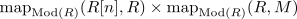

flat module spectrum
Definition
Let $M \in \mathrm{Mod}(R)$ be a module spectrum over an E_k ring spectrum. then $M$ is said to be flat, if
- $\pi_0(M)$ is a flat module over $\pi_0(R)$ (cf. homotopy group of a module spectrum as module over underlying discrete ring)
- for each $n \in \mathbb{Z}$ the map
\begin{align*}
\pi_n(R) \otimes_{\pi_0(R)} \pi_0(M) \rightarrow \pi_n(M)
\end{align*}
is an isomorphism
Note that this map is induced by

see also: